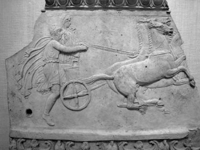

Kral Tantalos
Kendi adıyla anılan "Tantalos işkencesi" yöntemini insanlığa armağan etmiş(!) olan acımasız Frigya kralı Tantalos; tanrıların ne ölçüde uzgörür ve uyanık olduklarını bilmek, bunu yakından gözleriyle görmek istiyordu... Bu amaçla Olimpos'ta oturan tanrı ve tanrıçaları, sarayında düzenlediği yemekli bir şölene buyur etti bir gün. Gencecik öz oğlu Pelops'u da parça parça doğrattırıp bir yemek hazırlattı. Ve bu yemeği konuk tanrılara sundu...
Kral Tantalos
Olimposlu tanrıçalardan Demeter, çok acıktığından olacak, Pelops'un bir omzunun içinde bulunduğu bir tabak yemeği, bir solukta midesine indiriverdi! Diğer tanrılar da tam yemeğe başlayacağı anda Pelops, eskisinden daha güzel bir delikanlı olarak yeniden yaşama dönüverdi! Ve bütün tanrıların önünde sevinçten taklalar atmaya başladı!.. Tanrılar da olup bitenlerden bir anda şaşkına döndüler...
Ne var ki durumu hemen anladılar; artık bir omuzu noksan Pelops'a da çok acıdılar. Ama ilkin babası kral Tantalos'u sonsuz bir işkence çekmek üzere tanrı Hades'in yeraltındaki Ölüler Ülkesi'ne yolladılar!.. Delikanlı Pelops'a da çeşitli armağanlar sundular. Örneğin tanrı Poseydon; altın kakmalı, kartal kanatlı bir koşu arabası armağan etti ona... Demirci tanrı topal Hefaystos; tanrıça Demeter'in yediği ve çukur kalan eksik omzunun yerine, fildişinden yapılma pırıl pırıl ışıldayan bir omuz yerleştirdi. Bu yüzden Pelops'un daha sonraki soyağacını oluşturan akrabalarının resimlerini ve heykellerini canlandıran sanatçılar, onların omuzlarına parlak birer yıldız yerleştiriyorlardı hep...
Başına gelenlerden sonra prens Pelops; tanrıların da öğüdüyle, ülkesinden ayrılıp Yunanistan'daki Elis bölgesindeki Pisa krallığına göç etti. Savaş tanrısı korkunç Ares'in oğlu olan Pise kralı Oenomas'ın da güzelliği dillere destan Hippodameya (Hippodameia) adında bir kızı vardı. Yazgının bir cilvesi olarak Pelops, kent içinde dolaşırken bu güzel prensesle karşılaşıp tanıştı ve onun güzelliğine deli divane vuruldu... Artık onsuz yapamayacağını anlayan Pelops, gidip babası kral Oenomas'tan onu eş olarak istemeyi kafasına koydu...
Bir söylentiye göre bir gün sarayın demirbaş bilicisi, ölümünün damadının elinden olacağı yollu bir uzgörüde bulunmuştu kral Oenomas'a... Bazılarına göre de kral, kendi kızına âşıktı! Söylentilerin hangisi doğru olursa olsun, sonuç olarak kimselere vermek istemiyordu kızını!.. Ve kral; kız vermezliğine bir kılıf uydurmak üzere, kendisiyle yarışacak damat adayları için arabalı at yarışları düzenlemeye başladı. Bu yarışta kendisini geçen adaya kızını verecekti!.. Ne var ki kral Oenomas, kendisini hiçbir yarışçının geçemeyeceğinden de emindi. Çünkü babası savaş tanrısı Ares; böylesi koşularda hiçbir ölümlünün onu geçip alt edemeyeceği ölümsüz koşu atları armağan etmişti ona. O yüzden kızının da içinde bulunduğu koşu arabasıyla giriştiği her yarışmada; ilkin kendi arabasını arkalarda bırakıyor, sonra da bilerek açtığı arayı aniden kapatıyordu... Önündeki yarış arabasını geçerken de damat adayını kılıcıyla vurup düşürüyordu!.. Bu yarış Pis kentinde başlıyor, Korintos'taki Poseydon Sunağı'nda son buluyordu... Yarışma başlamazdan önce kral Oenomas, Baştanrı Zeus adına bir kurban kesmeyi unutmuyordu...
Hemen hemen bütün damat adayları başlarına gelecek kesin ölümü bile bile, kralı geçebilecekleri umuduyla bu yarışlara katılmaktan da kendilerini alamıyorlardı... Çünkü güzel Hippodameya'ya öylesine tutkundu her biri! İşte zaman içinde yarışlara katılan on iki damat adayı, böylesi bir yöntemle kralın kurbanları arasına katıldılar bir bir... Kral bu yarışmada ölenler için bir tören bile düzenletmiyor; üstelik onların kafasını kestirip yarış alanının kapısına astırıyordu... (O yüzden bu yarış kurbanlarının mermer büstleri, günümüzdeki yarış alanlarındaki giriş kapılarının üstlerini süslemekteydi!..)

Günlerden bir gün ünlü Tantalos'un oğlu ve Egeli göçmen Pelops da damat adayı oldu. Kendi sonunun da, önceki on iki aday gibi büyük bir olasılıkla kılıçlanmak olacağını biliyordu. Böyle bir yazgıdan kurtulabilmenin çeşitli yöntemleri üzerinde de uzun uzun kafa yormaya başladı. Sonunda, yarışı kesin olarak kazanabilmek için kralın en yakını ve onun yarış arabasının onarımcısı Mirtilos ile anlaşıp bir tuzak hazırlamaya karar verdi. Mirtilos'a gitti ve yarışı kazanması karşılığında ona krallığın yarısını rüşvet olarak vermeyi önerdi. Ne var ki yazgının bir cilvesi olarak bu kez, aşılması çok daha zor başka bir engel çıkıyordu karşısına Pelops'un: Mirtilos da kralın kızına gizliden gizliye, derinden âşıktı! Haliyle o da kızın bir başkasıyla evlenmesini istemiyordu!.. Bunun üzerine Pelops; "Yarışı kazanırsam, kraliçe ile bir gece geçirebileceksin!" şeklinde ikinci bir rüşvet önerdi: Böylesi bir sunuya anında tav olan Mirtilos; kralın yarış arabasının çelik donanımında bir tuzak düzeneği hazırladı hemen...
Damat adayı Pelops'la yarış başladıktan az sonra, kral Oenomas'ı koşturan araba parçalandı! Kral da yerlerde yuvarlana yuvarlana kan revan içinde kaldı. Ölmek üzereyken en yakın dostu bildiği onarımcı Mirtilos'a ilençler yağdırdı ve onun ölümünün de Pelops'un elinden olması için babası tanrı Ares'e yalvarıp yakardı... Artık Pelops da hem ölen kralın güzel kızıyla evlendi, hem ondan boşalan tahta kuruldu...
Mirtilos da, kurduğu tuzağın bedelini istemek üzere yeni kral Pelops'un huzuruna çıktı... Kral Pelops, daha önce önerdiği ama yerine getiremeyeceği rüşvetin ağırlığından kurtulmak için Mirtilos'u adamları aracılığıyla öldürttü. Sonra da işlediği günahlardan arınmak üzere, topal tanrı Hefaystos'a yalvar yakar oldu. Pelops'a acıyan ve ona hak veren tanrı, onu günahlarından arındırdı. Böylece günahlarından arındırılan ve acımasız kayınbabasının tahtına kurulan Pelops, gelecek kuşakların kendisini hep anımsamasını istedi. Bunun için de savaş tanrısı iğrenç Ares'in oğlu olan acımasız kralla giriştiği yarıştaki yengisini unutturmamak için, Olimpiyat oyunlarını ve yarışlarını, belirli aralıklarla kutlanan barış şölenlerine dönüştürdü ve bu şölenleri kurumlaştırdı. Damatlık yarışında can veren masum yarışçılar için de görkemli törenler düzenletmeyi unutmadı. Bu arada Mirtilos'un kan günahından arınmak için tanrı Hermes adına büyük bir tapınak yaptırdı. Günümüz Mora yarımadasındaki krallığının adını da, kendi adı Pelops'u anıştıracak şekilde Peloponez olarak değiştirdi...
Pelops'un krallığı çağında Yunanistan, hem barışa hem de ekonomik bir rahatlığa kavuştu. Onun ölümünden sonra da Yunanlılar; çok sevdikleri bu krallarının anısını yaşatmak üzere, Olimpiya'da çok görkemli bir tapınak yaptırdılar...
Kral Pelops'un Baştanrı Zeus onuruna Olimpiya kentinde kurumlaştırdığı bu "Olimpiyat Yarışları"; MÖ 776 yılından beri hemen hemen kesintisiz, her beş yılda bir düzenlenegelmekteydi. Bu oyunlara katılan yarışçılarda aranan ilk koşul; onların Yunanlı ve özgür yurttaş olmaları, yani köleler sınıfından olmamalarıydı.
Bu oyunlar giderek bütün ulusların katılabildiği ve barış amaçlı evrensel bir yarışın ve birlikteliğin simgesine dönüşecekti...